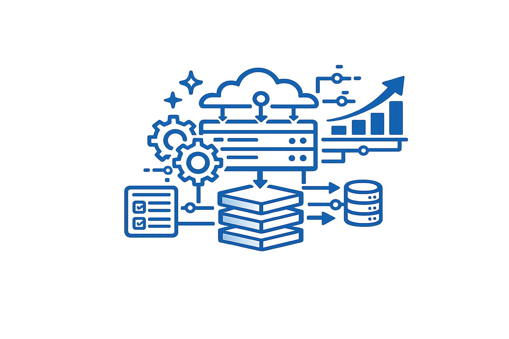
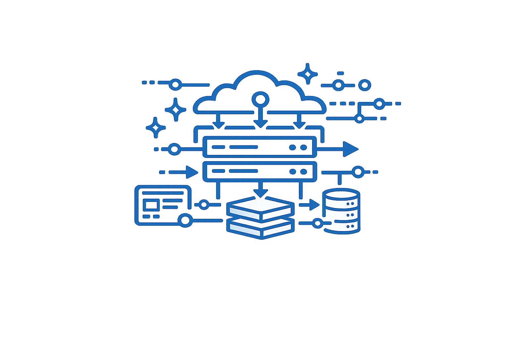
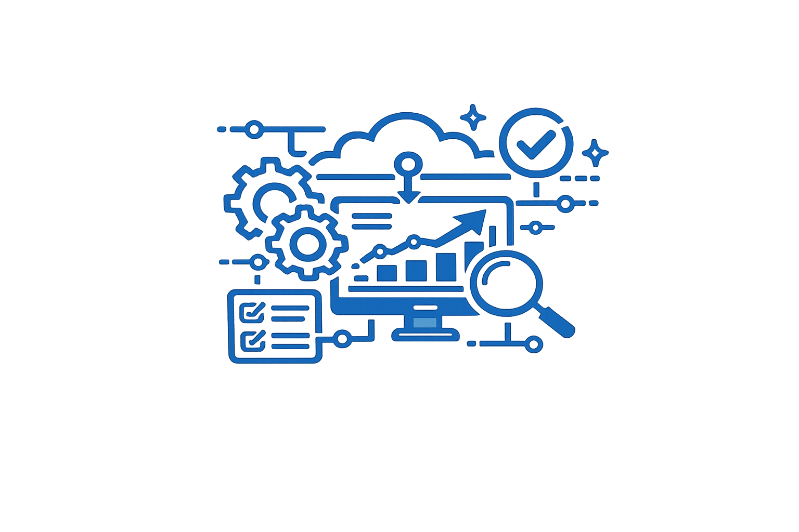

ARQUITETURA E PLANEJAMENTO DE INTEGRAÇÃO
A integração de sistemas começa com um planejamento estruturado da arquitetura tecnológica, garantindo que as soluções se conectem de forma segura, eficiente e escalável.
- Mapear sistemas existentes e fluxos de informação
- Identificar pontos de integração e dependências
- Definir arquitetura (APIs, microsserviços, ESB, middleware, etc.)
- Estabelecer padrões de comunicação e interoperabilidade
- Garantir requisitos de segurança e conformidade

ESTRATÉGIA DE CONECTIVIDADE E DADOS
Uma integração eficiente depende da padronização e da qualidade dos dados trafegados entre sistemas.
- Padronizar formatos e protocolos de comunicação
- Implementar APIs e serviços de integração
- Assegurar consistência, integridade e governança de dados
- Definir regras de sincronização (tempo real ou batch)
- Monitorar performance e disponibilidade das integrações

IMPLEMENTAÇÃO, TESTES E MONITORAMENTO
Após o planejamento e definição estratégica, a integração deve ser executada com foco em estabilidade, escalabilidade e continuidade operacional.
- Desenvolver e configurar conectores e integrações
- Realizar testes funcionais e de carga
- Monitorar logs, erros e falhas de comunicação
- Criar planos de contingência e recuperação
- Evoluir continuamente as integrações conforme novas demandas